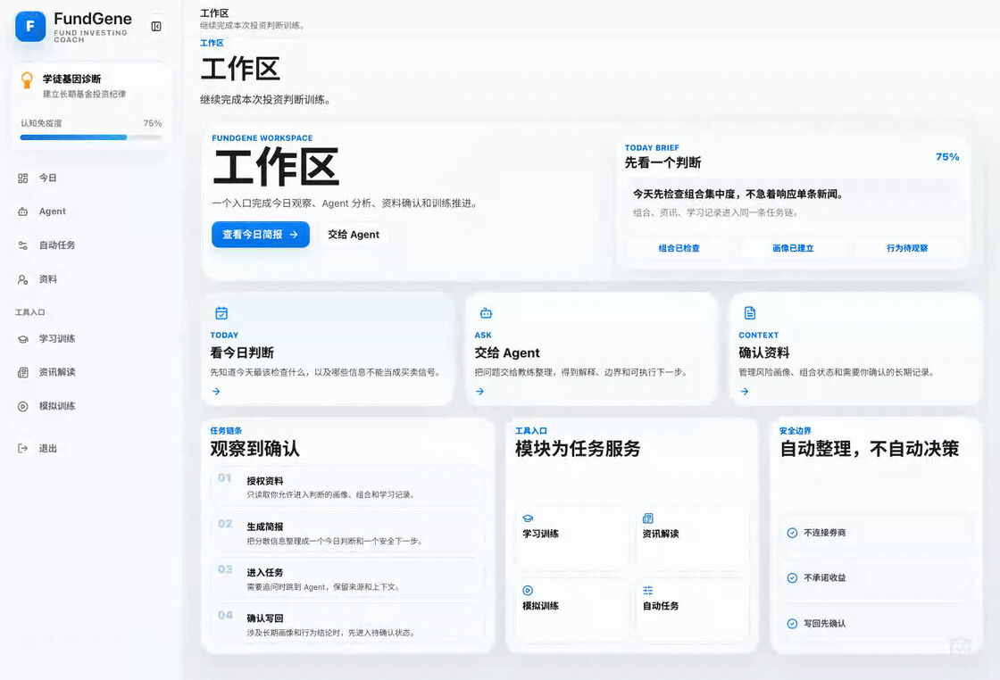
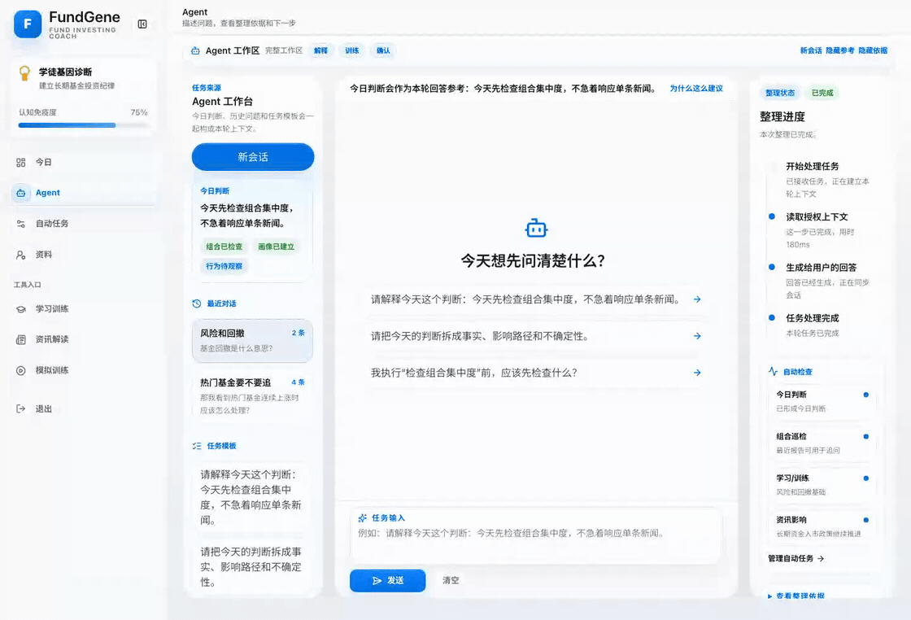
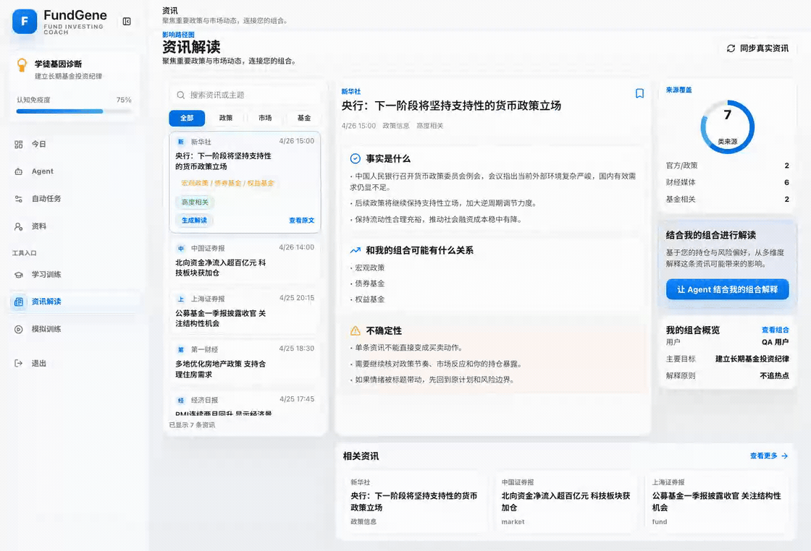
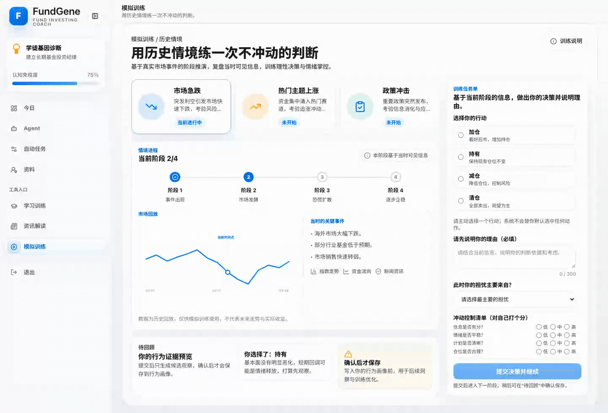
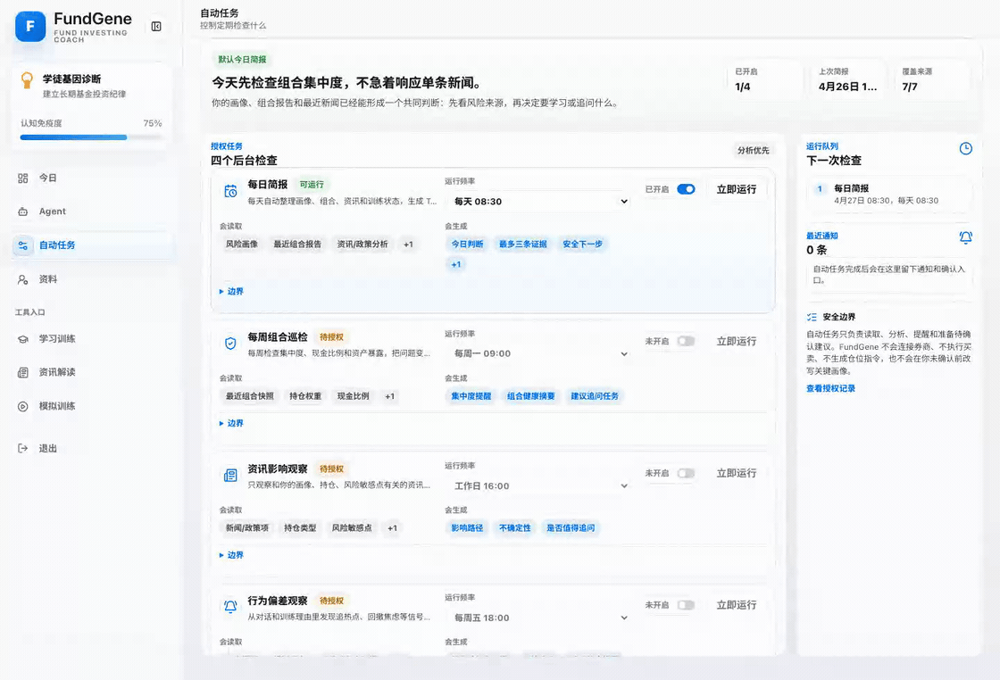
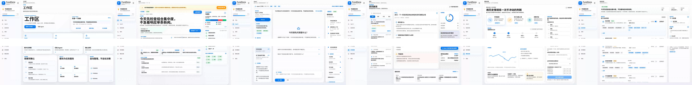

01 Today Command Center

默认首页：每日判断、证据、安全下一步。
优先使用主视频做开场叙事；单段 GIF/MP4 用作后续功能页循环展示。
45.73 秒连续叙事：开场立题 → 每日判断 → Agent 追问 → 资讯触发 → 情境训练 → 后台跟进 → 品牌收束。新版全程保留完整 UI 画面，不做局部缩放或聚焦裁切；画面节奏由真实光标、可见点击、页面跳转和章节转场承担。今日页保留可见点击并顺势进入工作区；章节页使用带模糊 UI 背景的链条式过渡，片尾回到 FundGene / Explain · Train · Confirm / 让基金新手先理解，再决策。

默认首页：每日判断、证据、安全下一步。

直接进入新任务，真实输入问题，回答明确点名所分析的政策资讯。

资讯/政策到个人组合影响路径，并跳转到 Agent 输出承接回答。

完成选择、理由填写、提交与复盘建议。

授权后台工作，立即执行后展示结果，资料页展示确认边界和授权上下文。

所有功能片段的快速视觉索引。